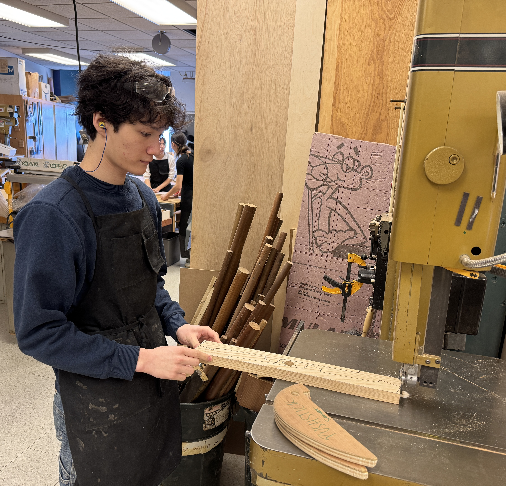

Welcome to my portfolio!
My name is Walker Simpson, I'm a Politics & Data Science student at the London School of Economics interested in emerging technologies and national defence. In this portfolio you can find a collection of my personal projects and work.
Currently, I'm finishing my data science project where I transform data from multiple API's to determine my ideal first car, waiting for my audio-technica headphones to arrive so I can begin testing 3d-printed component-mounts, and researching to begin my UAS policy tracking on substack.
In the near future, I plan to get a github foundations certification, and start learning SQL querying and database building.
If you have any questions or would like to get in touch, feel free to reach out via the icons in the top-right.
Most Recent Projects
Data Science Project 1
Weekday-Weekend London pollution comparison
Then, using the Pandas and Numpy libraries to convert UNIX into datetime, adding an is_weekend column to the cleaned json now csv file as well as filtering out certain chemical compounds not classified as pollutants.
Finally, using Matplotlib and Seaborn to create visualizations of the data.
Data Science Project 2
Peak-Offpeak Tube trip-time comparison
Working with multiple layers of nested data, flattening them into one processed .csv for analysis.
Finally, using the more advanced seaborn stripplot to present more detailed and actionable insights.
Data Science Project 3
IMDB vs Metacritic vs Tomatometer comparison
Gaained experience with the git workflow in a team setting.
My specialization was the frontend development of our statistically significant insights
Please see both the repository activity section and my individual reflection in the reflections folder to see my specific contributions
In Progress
Currently working on interface
Certifications
Planned horizontally-scrolling strip, soon to be implemented.